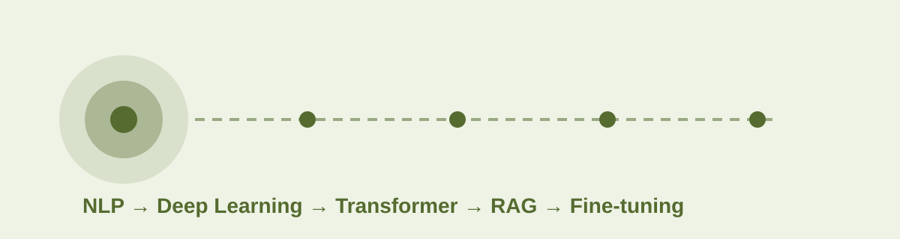

딥 러닝을 이용한
자연어 처리 입문
자연어 처리 기초부터 딥러닝, Transformer, BERT·GPT, RAG, LLM/VLM 파인튜닝까지 학습 흐름을 장별·절별로 탐색할 수 있도록 재구성한 정적 웹사이트입니다.

전체 장
자연어 처리 준비하기
NLP 실습에 필요한 개발 환경과 데이터 처리 도구를 준비하는 장입니다.
CHAPTER 02텍스트 전처리(Text preprocessing)
문장을 모델이 처리할 수 있는 입력으로 바꾸기 위한 전처리 기법을 정리합니다.
CHAPTER 03언어 모델(Language Model)
문장의 확률을 계산하고 다음 단어를 예측하는 전통적 언어 모델의 원리를 학습합니다.
CHAPTER 04카운트 기반의 단어 표현
단어 출현 빈도를 기반으로 텍스트를 벡터화하는 대표적인 방법을 다룹니다.
CHAPTER 05벡터의 유사도(Vector Similarity)
문서나 단어 벡터 간의 가까움과 차이를 수치로 측정하는 방법을 학습합니다.
CHAPTER 06머신 러닝(Machine Learning) 개요
NLP에 필요한 지도학습, 회귀, 분류, 벡터·행렬 연산의 기초를 학습합니다.
CHAPTER 07딥 러닝(Deep Learning) 개요
신경망의 구조와 학습 원리, 역전파, 과적합 방지 방법을 이해하는 장입니다.
CHAPTER 08순환 신경망(Recurrent Neural Network)
순차 데이터 처리를 위한 RNN, LSTM, GRU 구조와 텍스트 생성을 다룹니다.
CHAPTER 09워드 임베딩(Word Embedding)
단어 의미를 밀집 벡터로 표현하는 Word2Vec, GloVe, FastText 등 임베딩 기법을 다룹니다.
CHAPTER 10RNN을 이용한 텍스트 분류(Text Classification)
RNN 계열 모델을 실제 텍스트 분류 문제에 적용하는 방법을 학습합니다.
CHAPTER 11NLP를 위한 합성곱 신경망(CNN)
CNN의 지역 패턴 추출 능력을 문장 분류와 의도 분류에 적용합니다.
CHAPTER 12태깅 작업(Tagging Task)
문장의 각 토큰에 품사·개체명 등의 레이블을 부여하는 시퀀스 태깅을 다룹니다.
CHAPTER 13서브워드 토크나이저(Subword Tokenizer)
희귀어와 미등록어 문제를 완화하는 서브워드 토큰화 기법을 정리합니다.
CHAPTER 14RNN을 이용한 인코더-디코더
입력 시퀀스를 다른 출력 시퀀스로 변환하는 인코더-디코더 구조를 학습합니다.
CHAPTER 15어텐션 메커니즘(Attention Mechanism)
필요한 입력 위치에 가중치를 집중시키는 어텐션의 핵심 원리를 다룹니다.
CHAPTER 16트랜스포머(Transformer)
RNN 없이 Attention만으로 시퀀스를 처리하는 Transformer 구조를 학습합니다.
CHAPTER 17BERT
양방향 문맥을 학습하는 BERT의 사전학습 방식과 문장 임베딩 응용을 다룹니다.
CHAPTER 18실전! BERT 실습하기
BERT 계열 모델을 분류·NER·기계독해·검색 문제에 적용하는 실습 중심 장입니다.
CHAPTER 19GPT(Generative Pre-trained Transformer)
자기회귀 방식으로 다음 토큰을 생성하는 GPT 계열의 구조와 응용을 다룹니다.
CHAPTER 20사전 훈련된 인코더-디코더 모델
입력 이해와 출력 생성을 결합한 BART·T5 계열 모델의 활용을 학습합니다.
CHAPTER 21GPT-4 API 시작하기
언어 모델 API를 프로그램에서 호출하고 서비스에 연결하는 기본 흐름을 다룹니다.
CHAPTER 22랭체인을 이용한 RAG 시작하기
문서 검색 결과를 LLM 문맥에 결합하는 RAG 파이프라인과 LangChain 활용을 다룹니다.
CHAPTER 23RAG 성능을 올리는 기술
검색 품질을 개선하기 위한 리랭킹과 HyDE 등의 RAG 고도화 기법을 학습합니다.
CHAPTER 24LLM 파인튜닝(LLM Fine-tuning)
LoRA를 중심으로 LLM을 목적 데이터에 맞게 파인튜닝하고 평가·배포하는 흐름을 다룹니다.
CHAPTER 25VLM 파인튜닝(멀티모달 파인튜닝)
텍스트와 이미지를 함께 처리하는 VLM을 LoRA로 파인튜닝하고 평가하는 방법을 다룹니다.
CHAPTER 26토픽 모델링(Topic Modeling)
문서 집합에서 잠재 주제와 대표 키워드를 자동 추출하는 다양한 토픽 모델링 기법을 비교합니다.
CHAPTER 27질의 응답(QA) - LLM 이전
LLM 이전에 사용되던 메모리 네트워크 기반 질의응답 구조를 이해합니다.
CHAPTER 28텍스트 요약(Text Summarization) - LLM 이전
Attention과 TextRank를 이용한 전통적·신경망 기반 텍스트 요약 방식을 학습합니다.